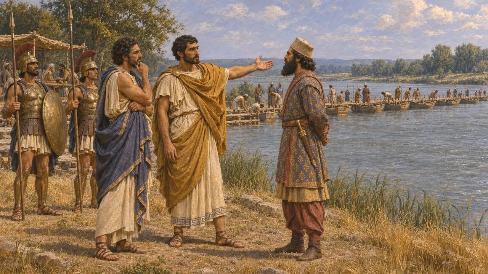
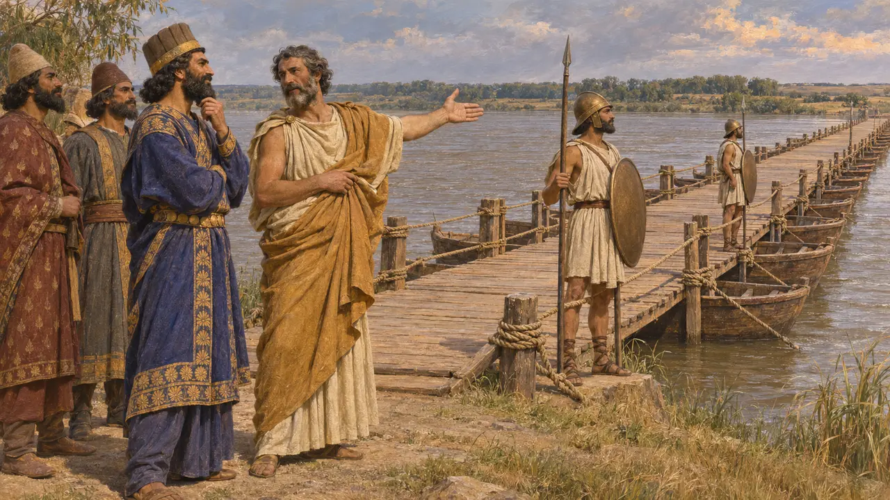
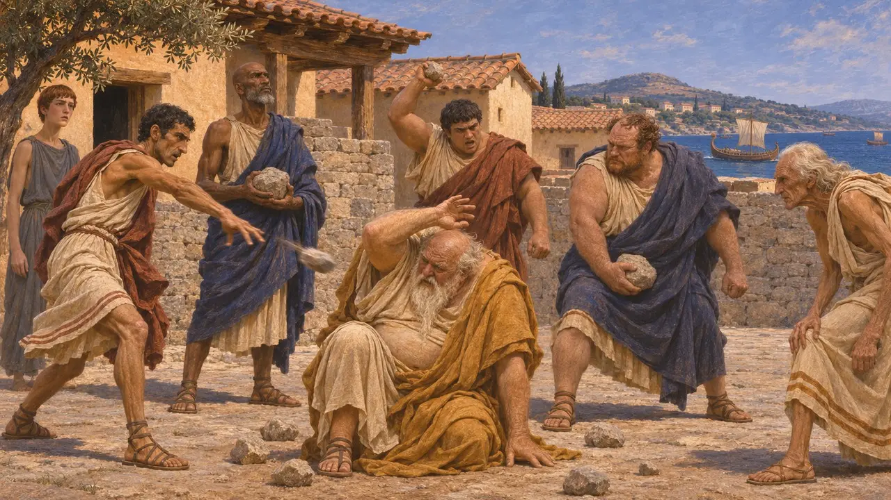
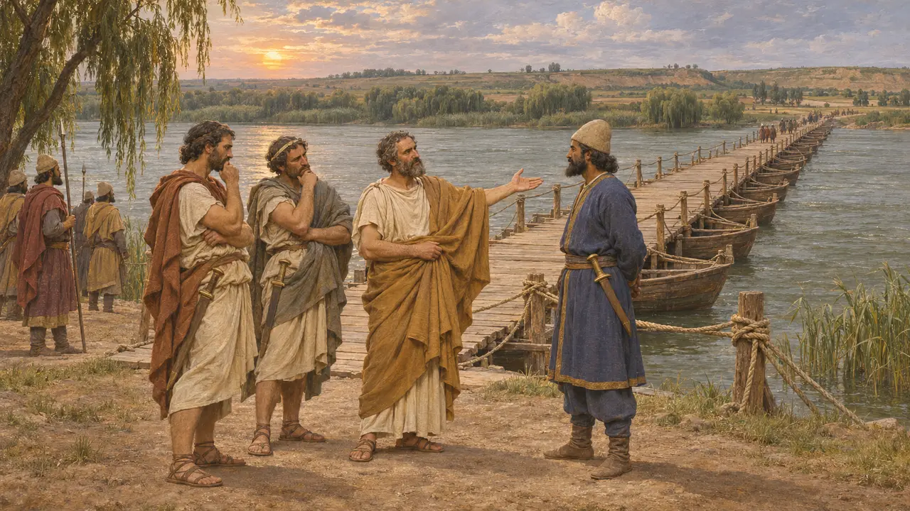

Mytileneli Koes
Dareios'un hizmetinde İstros'ta bulunan Yunan komutan, yaklaşık MÖ 513
Erxandros'un oğlu Koes, Lesbos'taki Mytilene'den bir Yunandı ve İskit seferinde Dareios'a eşlik etmişti. Herodotos'a göre Dareios'a İstros üzerindeki köprünün ayakta bırakılmasını öğütledi; Dareios da onu ödüllendirip kendi memleketinin yönetimini ona verdi. Bu hikâyeyi yalnızca Herodotos anlatır.
Oyunda: Oyun, Koes'un adını yalnızca İstros köprüsündeki tartışmayı ve Dareios'un İskit seferini ele alan olay yazılarında anar. Koes'un kendine ait bir figürü, yapısı ya da mekaniği yoktur.

Kralın hizmetinde bir Yunan
Antik anlatıHerodotos, Erksandros'un oğlu Koes'i, Dareios'la birlikte İstros'a giden Mytileneliler'in komutanlarından biri olarak anar. Koes, orada Kral'a hizmet eden Yunan önderler arasında, Miletli Histiaios'un yanında yer alır. Onun adını anan tek antik yazar Herodotos'tur.
Herodotus 4.97

Köprüdeki öğüt
Antik anlatıHerodotos'a göre Koes, Kral köprüyü gözden geçirirken Dareios'a bir öğüt verdi: Sefer kötü giderse diye köprü yerinde kalmalı ve onu inşa eden İonlar tarafından korunmalıydı. Dareios bunu onayladı. Daha sonra İskitler İonları köprüyü yıkmaya çağırdığında, Herodotos ayrı bir tartışmadan söz eder; bu tartışmada Atinalı Miltiades köprünün yıkılmasından yana, Histiaios ise buna karşıydı.
Herodotus 4.97; 4.136-137

Ödül ve Sonraki Kaderi
Antik anlatıHerodotos'a göre Dareios, Koes'e dilediği ödülü vermeyi önermiş, Koes de Mytilene'nin tiranlığını istemiştir. Herodotos, İon İsyanı başladığında Mytilene halkının Koes'i yakalayıp taşlayarak öldürdüğünü aktarır.
Herodotus 5.11; 5.38

Öykünün ne kadar güvenilir olduğu
TartışmalıHiçbir Pers metni Koes'ten ya da bu tartışmadan söz etmez; bu yüzden anlatı yalnızca Herodotos'a dayanır. Tarihçiler, İstros köprüsü olayının ve konuşmaların ne kadarının gerçek olaylara dayandığını, ne kadarının sonraki anlatımlarla ve İon İsyanı'yla biçimlendiğini tartışır. İskit seferinin gidişatı ise belirsizliğini korur.
Herodotus 4.137; P. Briant, From Cyrus to Alexander, 2002
Kaynaklar
- Herodotus 4.97
- Herodotus 4.136-137
- Herodotus 5.11
- Herodotus 5.38
- P. Briant, From Cyrus to Alexander, 2002